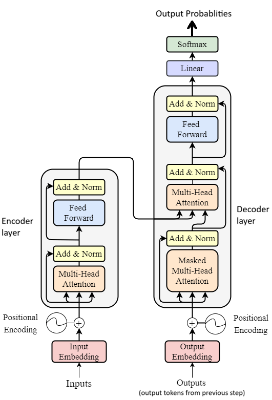

Transformer architecture is a deep learning architecture introduced by Google researchers in 2017 in the famous paper Attention Is All You Need.
It is the core architecture behind most modern Large Language Models (LLMs) such as ChatGPT, Claude, and Gemini.
The main job of a transformer is to understand relationships between words in a sentence and predict the next most likely word or token.
Before transformers, older models like RNNs and LSTMs were used for language tasks. They worked step by step, which made training slow and made it difficult to understand long-range relationships in text.
Transformers solved this problem by processing all words in parallel and by using self-attention to understand which words are important to each other.

This diagram shows the high-level flow of how a transformer processes input text and generates output.
Transformer architecture mainly divided into 2 layers -- Encoder layer and Decoder layer.
Encoder layer is mainly responsible for reading input whereas Decoder layer is mainly responsible for writing output.
Let's read about components of both layer one by one.
Input embedding with positional encoding is the input for encoding layer.
1. Input Tokens
The input sentence is first broken into tokens.
2. Input Embeddings
Each token is converted into numbers (vectors) so the model can understand and process it.
3. Positional Encoding
Since the transformer reads all words at once, it needs position information
to know the order of words in the sentence.
Ex. Dog bites a man --> Meaningful
Man bites a Dog --> Meaningless
To get meaningful data, positional encoding is necessary.
Final input to encoder = Input embedding + Positional encoding
4. Multi-Head Attention
Attention helps each word look at other words in the sentence and understand
which ones are important.
Multi-Head means multiple views in parallel.
Analogy:
Think of it like instead of reading a sentence with just 1 pair of eyes,
you read it with 8-12 pair of eyes at once, each looking for different kind of
relationships.
The idea is to split the job into "multiple heads" & let each head learn something
different. Then combine the results.
Example:
Text: "Sharma cold beverages at night"
Head1 --> may think who owns the cafe --> Sharma
Head2 --> What is being consumed --> Drinks
Head3 --> Quality --> Cold
Head4 --> Time? --> Night drinks
Head5 --> type/category? --> drinks only, Not food items.
More precisely, if reading a sentence:
Head1 may look for pronouns & what they refer to?
Head2 may look for adjective describing nouns
Head3 may look for cause-effect word
Head4 may look at word-order/grammar.
Note:
1. All these heads work in parallel to find the meaning & relationships.
2. Transformer is responsible to assign how many number of head should be assign to process.
5. Add & Norm
Add & Norm is a two-step helper block placed after major layers like attention and FFN layer.
Add modifies the input and adds it back to the layer's new output. It keeps the original
input too so no vital data is lost. Modified and Original input send as a new output.
Analogy: writing a new para, but keep the old draft too.
Norm re-format everything so font-size, spacing is consistent before sending to next.
Norm keep the values small and balanced, which prevents over-flow and confusion.
[6000, -10, 100, -0.1] ==> [6, -0.010, 0.1, -0.001]
Norm then smooths and balances those numbers (layer normalization) so the network trains smoothly
and stays stable. It prevents exploding or vanishing gradients.
6. Feed-Forward Neural Network
Feed Forward Network (FFN) is a simple neural network that processes each token independently.
It is the "think & process" part after attention.
Attention says :- What other words should I look at.
FFN says :- "Now that I've looked, let me process this info & transform it.
Analogy:
Classroom:
Attention = Students talking to each other , sharing notes.
FFN = Each student then goes & studies/thinks alone to understand what was shared.
In our previous example Sharma drinks
Drinks understood as action, Sharma understood as person.
Decoder layer is mainly responsible for generating output one token at a time.
It takes the previous output tokens as input and predicts the next possible token.
Input to decoder = Output tokens generated so far + positional encoding + encoder output
Decoder does not start from zero, it takes already generated words. First time, it starts with a START token.
1. Output Tokens
The decoder does not receive the full final answer at once. It starts with a starting token and then keeps generating one token at a time.
Example:
If the output is "I am learning AI"
Decoder may generate like this:
"I" → "I am" → "I am learning" → "I am learning AI"
2. Output Embeddings
Just like encoder input, decoder input tokens are also converted into numerical vectors so that the model can process them.
3. Positional Encoding
Since the decoder also processes token positions, positional encoding is added so it understands the order of generated words.
4. Masked Multi-Head Attention
This is similar to multi-head attention, but here the decoder is not allowed to see future words. Future words are hidden (masked).
It can only look at the words generated so far, not the next upcoming words.
This is called masked attention.
Why masking is needed?
Because while generating output, the model should predict the next token based only on past tokens,
not by cheating and looking ahead.
Example:
If current output is:
"I am learning"
Then decoder should predict the next token based only on these words,
not by looking at the full final sentence.
Note:
Masked attention hides future words so that model learns to predict, not copy.
Prevents cheating.
5. Add & Norm
Just like in the encoder, Add & Norm helps preserve original information and keeps the values balanced and stable before sending them forward.
6. Encoder-Decoder Attention (cross attention)
This is a special attention layer in the decoder. Here, the decoder looks at the encoder output to understand the input sentence better.
In simple words, decoder asks encoder: "What did you understand from the input?"
This helps the decoder generate output that is connected to the original input.
Example:
If encoder reads: "Translate: I love India"
Decoder uses encoder output to generate translated text correctly.
7. Feed-Forward Neural Network
After attention layers, the decoder uses a feed-forward network to further process and refine the information for each token.
This helps the decoder make a better prediction for the next word.
8. Linear Layer + Softmax
At the end, the decoder sends the processed information to a linear layer and then to a softmax layer.
Linear layer converts model thinking into word scores. It does not choose the word. It only prepares options.
Softmax converts the scores/values into probabilities for all possible next words.
Chooses next token with the highest probability.
Example:
Input: "We are going to the"
Possible predictions:
beach → 0.30
market → 0.45
school → 0.15
park → 0.10
Final output token = market
Final output from decoder: Next predicted token
This process repeats again and again until the model generates the complete output sentence.
Transformer architecture is the foundation of modern language models. It uses embeddings, positional encoding, self-attention, and neural layers to understand text and generate meaningful output.
In short, transformers help AI understand context much better than older models.